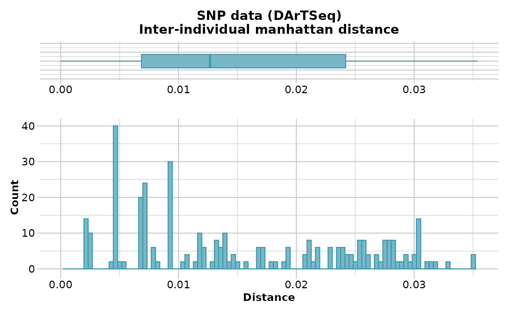
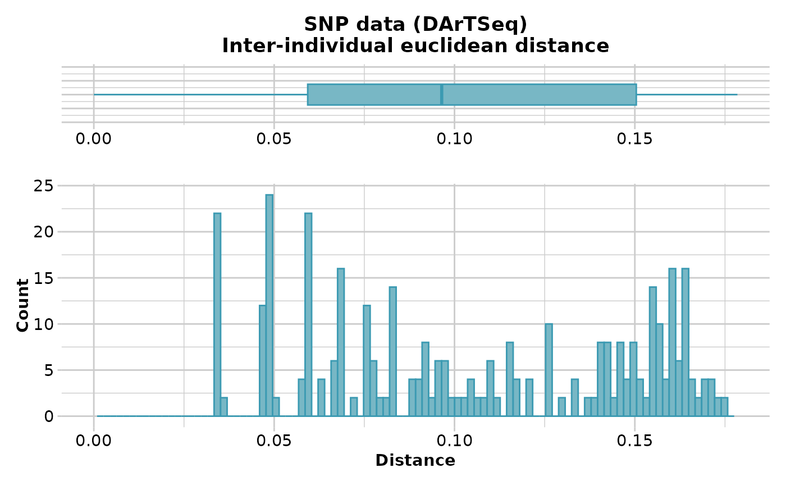

gl.dist.ind.RdThis script calculates various distances between individuals based on allele frequencies or presence-absence data
gl.dist.ind(
x,
method = NULL,
scale = FALSE,
swap = FALSE,
output = "dist",
plot.out = TRUE,
plot_theme = theme_dartR(),
plot_colors = two_colors,
save2tmp = FALSE,
verbose = NULL
)Name of the genlight containing the SNP genotypes or presence-absence data [required].
Specify distance measure [SNP: Euclidean; P/A: Simple].
If TRUE, the distances are scaled to fall in the range [0,1] [default TRUE]
If TRUE and working with presence-absence data, then presence (no disrupting mutation) is scored as 0 and absence (presence of a disrupting mutation) is scored as 1 [default FALSE].
Specify the format and class of the object to be returned, 'dist' for a object of class dist, 'matrix' for an object of class matrix [default "dist"].
If TRUE, display a histogram and a boxplot of the genetic distances [TRUE].
User specified theme [default theme_dartR].
Vector with two color names for the borders and fill [default two_colors].
If TRUE, saves any ggplots to the session temporary directory [default FALSE].
Verbosity: 0, silent or fatal errors; 1, begin and end; 2, progress log ; 3, progress and results summary; 5, full report [default 2 or as specified using gl.set.verbosity].
An object of class 'matrix' or dist' giving distances between individuals
The distance measure for SNP genotypes can be one of:
Euclidean Distance [method = "Euclidean"]
Scaled Euclidean Distance [method='Euclidean", scale=TRUE]
Simple Mismatch Distance [method="Simple"]
Absolute Mismatch Distance [method="Absolute"]
Czekanowski (Manhattan) Distance [method="Manhattan"]
The distance measure for Sequence Tag Presence/Absence data (binary) can be one of:
Euclidean Distance [method = "Euclidean"]
Scaled Euclidean Distance [method='Euclidean", scale=TRUE]
Simple Matching Distance [method="Simple"]
Jaccard Distance [method="Jaccard"]
Bray-Curtis Distance [method="Bray-Curtis"]
Refer to the dartR Technical Note on Distances in Genetics.
D <- gl.dist.ind(testset.gl[1:20,], method='euclidean',scale=TRUE)
#> Starting gl.dist.ind
#> Processing genlight object with SNP data
#> Warning: data include loci that are scored NA across all individuals.
#> Consider filtering using gl <- gl.filter.allna(gl)
#> Calculating scaled Euclidean Distances between individuals
#>

#> Returning a stat::dist object
#> Completed: gl.dist.ind
#>
D <- gl.dist.ind(testset.gl[1:20,], method='manhattan')
#> Starting gl.dist.ind
#> Processing genlight object with SNP data
#> Warning: data include loci that are scored NA across all individuals.
#> Consider filtering using gl <- gl.filter.allna(gl)
#> Calculating Manhattan distance
#>
#> Returning a stat::dist object
#> Completed: gl.dist.ind
#>
D <- gl.dist.ind(testset.gs[1:20,], method='Jaccard',swap=TRUE)
#> Starting gl.dist.ind
#> Processing genlight object with Presence/Absence (SilicoDArT) data
#> Calculating distances based on the Jaccard Coefficient
#>

#> Returning a stat::dist object
#> Completed: gl.dist.ind
#>